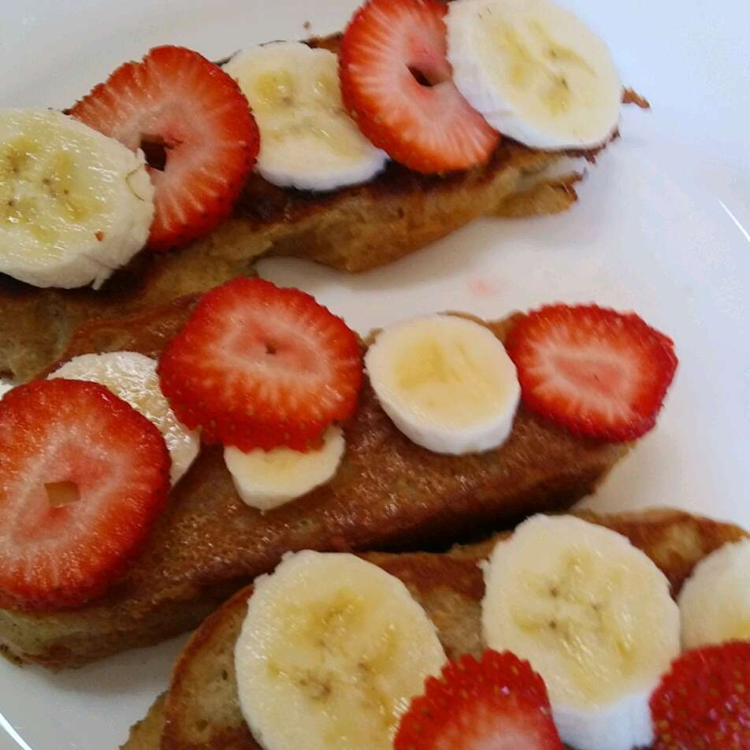

Vegan French Toast with Tofu

Serve with vegan butter.
Ingredients
- ¼ cup boiling water
- 1 tablespoon ground flax seeds
- ½ cup vanilla soy milk
- ¼ (12 ounce) package extra-firm tofu, drained
- 1 teaspoon nutritional yeast
- 1 tablespoon cornstarch
- 6 slices dense bread
- 1 tablespoon vegetable oil
Steps
- Mix boiling water and ground flax seeds together in a bowl; let sit until thickened, about 10 minutes.
- Combine flax mixture, soy milk, tofu, and nutritional yeast in a blender; blend on high speed until flax has almost disappeared. Add cornstarch while blender is still running and blend until batter is smooth. Pour batter into a bowl and refrigerate until chilled, about 30 minutes.
- Pour some of the batter into a shallow bowl or plate. Dip bread, 1 slice at a time, into the batter until evenly coated.
- Heat oil in a skillet over medium-high heat. Cook each dipped bread slice in the hot oil for 5 minutes; flip and cook the other side until lightly browned, 1 to 2 minutes more.